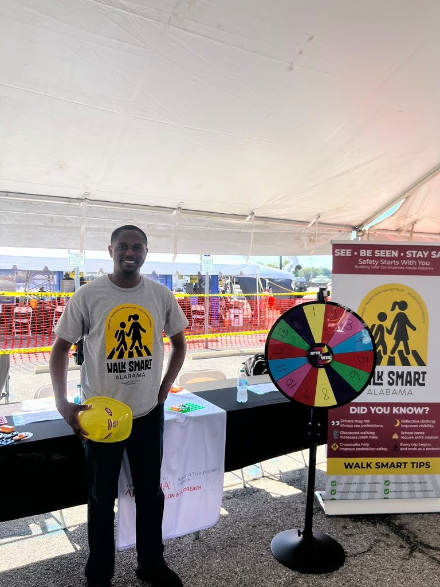
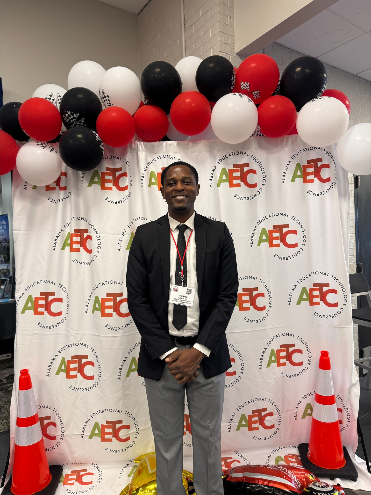

My professional growth takes place through outreach with young people and families, collaboration with educators, conference participation, and scholarship that connects instructional technology with transportation STEM education.
01
Community engagement
Outreach and Community Impact
I use hands-on activities, discussion, demonstrations, and mentoring to make transportation safety and emerging technologies understandable to young learners, educators, and families.
Walk Smart Alabama
Through pedestrian-safety conversations, games, and STEM activities, I helped children and families connect safe walking decisions with the road environments they encounter every day. Activities have included engagement at Tuscaloosa Public Library and World of Works at Shelton State.
Transportation Innovation and STEM Academy
During a week-long middle-school summer camp, I led and supported sessions involving robotics, coding, drones, engineering design, 3D printing, energy activities, and transportation-career exploration.
I co-led “Engineering the Driverless Future,” introducing students to autonomous-vehicle sensing, decision-making, and action through a Sphero RVR challenge, followed by a session on drones as aerial autonomous systems.
Students built a model pedestrian traffic-light circuit, considered how sound could support a person with visual impairment, added a buzzer, and investigated solar energy as an alternative power source.
School and Community STEM Events
My outreach has also included AL’s Pals mentoring, community events, World of Works, and other opportunities to connect transportation, safety, coding, and STEM careers with learners’ experiences.
View outreach photographs

Walk Smart AlabamaFamily and community engagement
02
Presentations and learning
Conferences and Professional Learning
Conference participation allows me to share developing work, learn from educators and researchers, demonstrate instructional resources, and refine ideas through professional feedback.
CR2C2 Southeast Regional Conference
I co-presented the poster “Connecting Research to Community through Educator Professional Development,” which frames educator learning as a way to connect emerging transportation research with K–12 classrooms and communities.
Alabama Educational Technology Conference
I contributed to a presentation and hands-on learning experience focused on how transportation technologies, algorithms, sensors, and physical computing can support computer science and digital-literacy learning.
MEGA Conference
I participated in the ATI Education Outreach and Workforce Development team’s AMSTI Highlight Session, sharing transportation-focused STEM resources and classroom experiences with educators.
Transportation Tech and STEM Education Summit
I contributed to the inaugural 2026 summit, which connected educators, researchers, and industry partners around AI, automation, autonomous vehicles, connected infrastructure, electric mobility, and classroom-ready STEM resources.
View conference photographs

Alabama Educational Technology ConferenceHands-on professional learning session
03
Evidence and development
Publications and Scholarship
I treat scholarship as a developing record of research, evidence synthesis, curriculum design, reflection, and revision. I identify work in progress clearly and add stable publication links only when they become available.